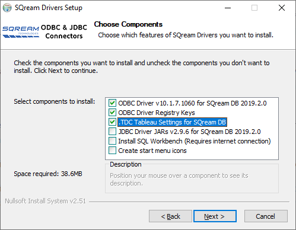
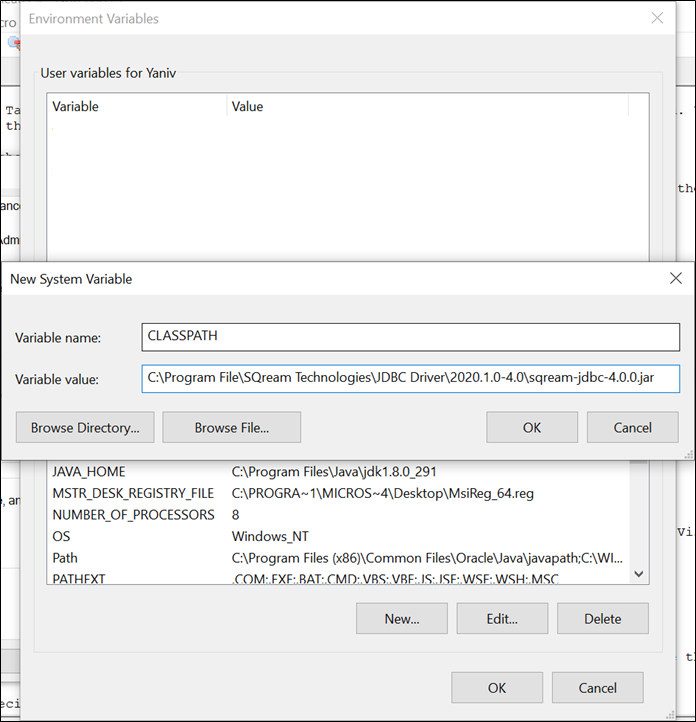

Connecting to SQream Using Tableau (Old)
Overview
SQream’s Tableau connector plugin, based on standard JDBC, enables storing and fast querying large volumes of data.
The Connecting to SQream Using Tableau page is a Quick Start Guide that describes how install Tableau and the JDBC and ODBC drivers and connect to SQream using the JDBC and ODBC drivers for data analysis. It also describes using best practices and troubleshoot issues that may occur while installing Tableau. SQream supports both Tableau Desktop and Tableau Server on Windows, MacOS, and Linux distributions.
For more information on SQream’s integration with Tableau, see Tableau’s Extension Gallery.
The Connecting to SQream Using Tableau page describes the following:
Installing the JDBC Driver and Tableau Connector Plugin
This section describes how to install the JDBC driver using the fully-integrated Tableau connector plugin (Tableau Connector, or .taco file). SQream has been tested with Tableau versions 9.2 and newer.
To connect to SQream using Tableau:
Install the Tableau Desktop application.
For more information about installing the Tableau Desktop application, see the Tableau products page and click Download Free Trial. Note that Tableau offers a 14-day trial version.
Do one of the following:
For Windows - See Installing Tableau Using the Windows Installer.
For MacOS or Linux - See Installing the JDBC Driver Manually.
Note
For Tableau 2019.4 versions and later, SQream recommends installing the JDBC driver instead of the previously recommended ODBC driver.
Installing the JDBC Driver Using the Windows Installer
If you are using Windows, after installing the Tableau Desktop application you can install the JDBC driver using the Windows installer. The Windows installer is an installation wizard that guides you through the JDBC driver installation steps. When the driver is installed, you can connect to SQream.
To install Tableau using the Windows installer:
Close Tableau Desktop.
Download the most current version of the SQream JDBC driver.
Do the following:
Start the installer.
Verify that the Tableau Desktop connector item is selected.
Follow the installation steps.
You can now restart Tableau Desktop or Server to begin using the SQream driver by connecting to SQream.
Installing the JDBC Driver Manually
If you are using MacOS, Linux, or the Tableau server, after installing the Tableau Desktop application you can install the JDBC driver manually. When the driver is installed, you can connect to SQream.
To install the JDBC driver manually:
Download the JDBC installer and SQream Tableau connector (.taco) file from the from the client drivers page.
Install the JDBC driver by unzipping the JDBC driver into a Tableau driver directory.
Based on the installation method that you used, your Tableau driver directory is located in one of the following places:
Tableau Desktop on Windows: C:\Program Files\Tableau\Drivers
Tableau Desktop on MacOS: ~/Library/Tableau/Drivers
Tableau on Linux: /opt/tableau/tableau_driver/jdbc
Note
If the driver includes only a single .jar file, copy it to C:\Program Files\Tableau/Drivers. If the driver includes multiple files, create a subfolder A in C:\Program Files\Tableau/Drivers and copy all files to folder A.
Note the following when installing the JDBC driver:
You must have read permissions on the .jar file.
Tableau requires a JDBC 4.0 or later driver.
Tableau requires a Type 4 JDBC driver.
The latest 64-bit version of Java 8 is installed.
Install the SQreamDB.taco file by moving the SQreamDB.taco file into the Tableau connectors directory.
Based on the installation method that you used, your Tableau driver directory is located in one of the following places:
Tableau Desktop on Windows: C:\Users\<your user>\My Tableau Repository\Connectors
Tableau Desktop on Windows: ~/My Tableau Repository/Connectors
Optional - If you are using the Tableau Server, do the following:
Create a directory for Tableau connectors and give it a descriptive name, such as C:\tableau_connectors.
This directory needs to exist on all Tableau servers.
Copy the SQreamDB.taco file into the new directory.
Set the native_api.connect_plugins_path option to
tsmas shown in the following example:$ tsm configuration set -k native_api.connect_plugins_path -v C:/tableau_connectors
If a configuration error is displayed, add
--force-keysto the end of the command as shown in the following example:$ tsm configuration set -k native_api.connect_plugins_path -v C:/tableau_connectors--force-keys
To apply the pending configuration changes, run the following command:
$ tsm pending-changes applyWarning
This restarts the server.
You can now restart Tableau Desktop or Server to begin using the SQream driver by connecting to SQream as described in the section below.
Installing the ODBC Driver for Tableau Versions 2019.3 and Earlier
This section describes the installation method for Tableau version 2019.3 or earlier and describes the following:
Note
SQream recommends installing the JDBC driver to provide improved connectivity.
Automatically Reconfiguring the ODBC Driver After Initial Installation
If you’ve already installed the SQream ODBC driver and installed Tableau, SQream recommends reinstalling the ODBC driver with the .TDC Tableau Settings for SQream DB configuration shown in the image below:
SQream recommends this configuration because Tableau creates temporary tables and runs several discovery queries that may impact performance. The ODBC driver installer avoids this by automatically reconfiguring Tableau.
For more information about reinstalling the ODBC driver installer, see Install and Configure ODBC on Windows.
If you want to manually reconfigure the ODBC driver, see Manually Reconfiguring the ODBC Driver After Initial Installation below.
Manually Reconfiguring the ODBC Driver After Initial Installation
The file Tableau Datasource Customization (TDC) file lets you use Tableau make full use of SQream DB’s features and capabilities.
To manually reconfigure the ODBC driver after initial installation:
Do one of the following:
Download the
odbc-sqream.tdcfile to your machine and open it in a text editor.Copy the text below into a text editor:
SQream ODBC TDC File<?xml version='1.0' encoding='utf-8' ?> <connection-customization class='genericodbc' enabled='true' version='2019.3'> <vendor name='SQream DB Server' /> <driver name='SqreamODBCDriver' /> <customizations> <customization name='CAP_SKIP_CONNECT_VALIDATION' value='yes' /> <customization name='CAP_CREATE_TEMP_TABLES' value='no' /> <customization name='CAP_QUERY_GROUP_BY_ALIAS' value='no' /> <customization name='CAP_ODBC_METADATA_SUPPRESS_SQLFOREIGNKEYS_API' value='yes' /> <customization name='CAP_ODBC_METADATA_SUPPRESS_SQLPRIMARYKEYS_API' value='yes' /> <customization name='CAP_QUERY_JOIN_ACROSS_SCHEMAS' value='yes' /> <customization name='CAP_SELECT_INTO' value='no' /> <customization name='CAP_QUERY_SUBQUERIES' value='no' /> <customization name='CAP_QUERY_SUBQUERY_DATASOURCE_CONTEXT' value='yes' /> <customization name='CAP_QUERY_SUBQUERY_QUERY_CONTEXT' value='yes' /> <customization name='CAP_QUERY_SUBQUERIES_WITH_TOP' value='yes' /> <customization name='CAP_QUERY_TOP_N' value='yes' /> <customization name='CAP_QUERY_TOPSTYLE_TOP' value='yes' /> <customization name='CAP_STORED_PROCEDURE_PREFER_TEMP_TABLE' value='no' /> <customization name='CAP_SUPPRESS_DISPLAY_LIMITATIONS' value='yes' /> <customization name='CAP_QUERY_GROUP_BY_DEGREE' value='yes' /> <customization name='CAP_FAST_METADATA' value='yes' /> <customization name='CAP_MULTIPLE_CONNECTIONS_FROM_SAME_IP' value='yes' /> </customizations> </connection-customization>
Check which version of Tableau you are using.
In the text of the file shown above, in the highlighted line, replace the version number with the major version of Tableau that you are using.
For example, if you are using Tableau vesion 2019.2.1, replace it with 2019.2.
Do one of the following:
If you are using Tableau Desktop - save the TDC file to C:\Users\<user name>\Documents\My Tableau Repository\Datasources, where
<user name>is the Windows username that you have installed Tableau under.
If you are using the Tableau Server - save the TDC file to C:\ProgramData\Tableau\Tableau Server\data\tabsvc\vizqlserver\Datasources.
Configuring the ODBC Connection
The ODBC connection uses a DSN when connecting to ODBC data sources, and each DSN represents one SQream database.
To configure the ODBC connection:
Create an ODBC DSN.
Open the Windows menu by pressing the Windows button (⊞ Win) or clicking the Windows menu button.
Type ODBC and select ODBC Data Sources (64-bit).
During installation, the installer created a sample user DSN named SQreamDB.
Optional - Do one or both of the following:
Modify the DSN name.
Create a new DSN name by clicking Add and selecting SQream ODBC Driver.
Click Finish.
Enter your connection parameters.
The following table describes the connection parameters:
Item
Description
Example
Data Source Name
The Data Source Name. SQream recommends using a descriptive and easily recognizable name for referencing your DSN. Once set, the Data Source Name cannot be changed.
Description
The description of your DSN. This field is optional.
User
The username of a role to use for establishing the connection.
rhendricksPassword
The password of the selected role.
Tr0ub4dorDatabase
The database name to connect to. For example,
mastermasterService
The service queue to use.
For example,
etl. For the default servicesqream, leave blank.Server
The hostname of the SQream worker.
127.0.0.1orsqream.mynetwork.coPort
The TCP port of the SQream worker.
5000or3108User Server Picker
Uses the load balancer when establishing a connection. Use only if exists, and check port.
SSL
Uses SSL when establishing a connection.
Logging Options
Lets you modify your logging options when tracking the ODBC connection for connection issues.
Tip
Test the connection by clicking Test before saving your DSN.
Save the DSN by clicking OK.
Connecting Tableau to SQream
To connect Tableau to SQream:
Start Tableau Desktop.
In the Connect menu, in the To a server sub-menu, click More Servers and select Other Databases (ODBC).
The Other Databases (ODBC) window is displayed.
In the Other Databases (ODBC) window, select the DSN that you created in Setting Up SQream Tables as Data Sources.
Tableau may display the Sqream ODBC Driver Connection Dialog window and prompt you to provide your username and password.
Provide your username and password and click OK.
Connecting to SQream
After installing the JDBC driver you can connect to SQream.
To connect to SQream:
Start Tableau Desktop.
In the Connect menu, in the To a Server sub-menu, click More….
More connection options are displayed.
Select SQream DB by SQream Technologies.
The New Connection dialog box is displayed.
In the New Connection dialog box, fill in the fields and click Sign In.
The following table describes the fields:
Item
Description
Example
Server
Defines the server of the SQream worker.
127.0.0.1orsqream.mynetwork.coPort
Defines the TCP port of the SQream worker.
3108when using a load balancer, or5100when connecting directly to a worker with SSL.Database
Defines the database to establish a connection with.
masterCluster
Enables (
true) or disables (false) the load balancer. After enabling or disabling the load balance, verify the connection.Username
Specifies the username of a role to use when connecting.
rhendricksPassword
Specifies the password of the selected role.
Tr0ub4dor&3Require SSL (recommended)
Sets SSL as a requirement for establishing this connection.
The connection is established and the data source page is displayed.
Tip
Tableau automatically assigns your connection a default name based on the DSN and table. SQream recommends giving the connection a more descriptive name.
Setting Up SQream Tables as Data Sources
After connecting to SQream you must set up the SQream tables as data sources.
To set up SQream tables as data sources:
From the Table menu, select the desired database and schema.
SQream’s default schema is public.
Drag the desired tables into the main area (labeled Drag tables here).
This area is also used for specifying joins and data source filters.
Open a new sheet to analyze data.
Tip
For more information about configuring data sources, joining, filtering, see Tableau’s Set Up Data Sources tutorials.
Tableau Best Practices and Troubleshooting
This section describes the following best practices and troubleshooting procedures when connecting to SQream using Tableau:
Inserting Only Required Data
When using Tableau, SQream recommends using only data that you need, as described below:
Insert only the data sources you need into Tableau, excluding tables that don’t require analysis.
To increase query performance, add filters before analyzing. Every modification you make while analyzing data queries the SQream database, sometimes several times. Adding filters to the datasource before exploring limits the amount of data analyze and increases query performance.
Using Tableau’s Table Query Syntax
Dragging your desired tables into the main area in Tableau builds queries based on its own syntax. This helps ensure increased performance, while using views or custom SQL may degrade performance. In addition, SQream recommends using the CREATE VIEW to create pre-optimized views, which your datasources point to.
Creating a Separate Service for Tableau
SQream recommends creating a separate service for Tableau with the DWLM. This reduces the impact that Tableau has on other applications and processes, such as ETL. In addition, this works in conjunction with the load balancer to ensure good performance.
Troubleshooting Workbook Performance Before Deploying to the Tableau Server
Tableau has a built-in performance recorder that shows how time is being spent. If you’re seeing slow performance, this could be the result of a misconfiguration such as setting concurrency too low.
Use the Tableau Performance Recorder for viewing the performance of queries run by Tableau. You can use this information to identify queries that can be optimized by using views.
Troubleshooting Error Codes
Tableau may be unable to locate the SQream JDBC driver. The following message is displayed when Tableau cannot locate the driver:
Error Code: 37CE01A3, No suitable driver installed or the URL is incorrect
To troubleshoot error codes:
If Tableau cannot locate the SQream JDBC driver, do the following:
Verify that the JDBC driver is located in the correct directory:
Tableau Desktop on Windows: C:Program FilesTableauDrivers
Tableau Desktop on MacOS: ~/Library/Tableau/Drivers
Tableau on Linux: /opt/tableau/tableau_driver/jdbc
Find the file path for the JDBC driver and add it to the Java classpath:
For Linux -
export CLASSPATH=<absolute path of SQream DB JDBC driver>;$CLASSPATHFor Windows - add an environment variable for the classpath:

If you experience issues after restarting Tableau, see the SQream support portal.